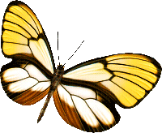

舞姬| 成长分布 | 会飞的花 | 蝴蝶传粉 | 大自然舞姬 |


| 大自然  舞姬 |
|||||
|
|||||
|
流连大自然中，回味着"鸟啼三月雨，蝶舞百花风"的情韵。此时此景，你也许会倍感春光明媚，万物复苏，百花争艳而由衷地赞美蝴蝶--美的精灵。蝴蝶的美，使得人们如醉如痴地爱它。 人类对蝴蝶的称颂，自古而然，而且中外似乎一致；骚人墨客，已不知为它们写下多少脍炙人口的诗篇;画家们也常将它们融入令人低回的乐章;甚至凡夫俗子，见到它们也曾藉着粗俗的字眼，诉说他们的感受。所以这种素有"大自然的舞姬"之称的昆虫，与人类的生活可以说息息相关。 | ||||